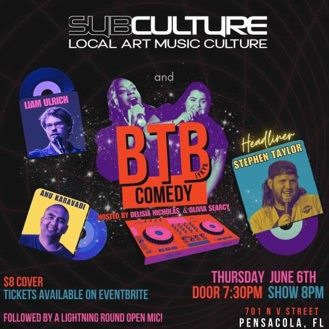

Stephen Taylor, Liam Ulrich, Anu Karavadi, Delisia Nicholas, Olivia Searcy
Thursday June 6th at @pensacolasubculture! We have a very special guest, Stephen Taylor, from Kansas City! Stephen has headlined at clubs, colleges and bars across the country. He has been featured on the The Breakfast Club, The New York Post, and at San Francisco Sketchfest. He was recently awarded best performer at the 2023 Cleveland Comedy Festival and is on tour with the Unteachables. Stephen is the co-founder of the Barrel of the Bottoms Studio in Kansas City, and the co-host of the Set to Destroy Podcast. Joining Stephen will be local and regional favorites, Anu Karavadi and Liam Ulrich. Hosted by Olivia Searcy and Delisia Nicholas. Tickets can be purchased on Eventbrite or at the venue. Beer, wine, and seltzers are also available at the venue. See you there!!